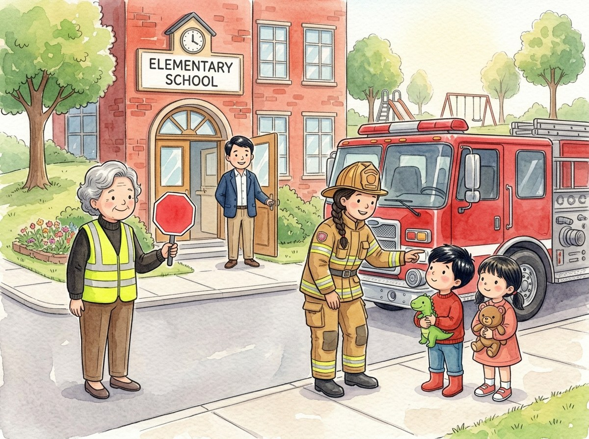

Kindergarten · Estudios sociales · SS.K.CV.1
¿Quién nos cuida?
Un cuento sobre las personas que nos cuidan cada día.
Tres palabras nuevas
La persona que ayuda a los niños a cruzar la calle sin peligro.
La persona que dirige la escuela y cuida que todo funcione bien.
Una persona que apaga incendios y ayuda en las emergencias.
Toca un dibujo para oír la palabra y qué significa.
El cuento
Cada mañana, Adrián y Génesis caminan a la escuela.
En la esquina está la señora Rosa, la guardia del cruce. Levanta su señal de alto y los carros se detienen.
—¡Gracias, señora Rosa! —dicen los niños, y cruzan seguros.
En la puerta los espera el señor Morales, el director de la escuela.
Él cuida que la escuela sea un lugar seguro y que todos puedan aprender.
Hoy hay una visita especial: ¡un camión rojo llega a la escuela!
Baja una bombera con su casco. Se llama Carmen.
—Mi trabajo es apagar incendios y ayudar a las personas en peligro —dice.
Adrián se prueba el casco. ¡Le queda grandísimo!
Cada persona tiene un trabajo, y entre todos cuidamos la comunidad.
Preguntas
Escucha la pregunta y toca el dibujo correcto.
-
Pregunta A. ¿Qué hace la señora Rosa, la guardia del cruce?
La señora Rosa levanta su señal de alto y los carros se detienen.
-
Pregunta B. ¿Qué cuida el director?
El director cuida que la escuela sea un lugar seguro y que todos puedan aprender.
-
Pregunta C. ¿Cuál es el trabajo de Carmen, la bombera?
El trabajo de Carmen es apagar incendios y ayudar a las personas en peligro.